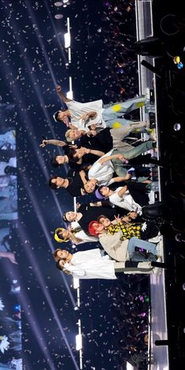

About SEVENTEEN
SEVENTEEN, the sensational South Korean boyband, is a must-know name for all new K-pop enthusiasts. With their unparalleled talent, versatility, and exceptional stage presence, SEVENTEEN has taken the K-pop world by storm. Comprising 13 members, the group is known for their captivating music, high-energy performances, and intricate choreography that sets them apart in the industry. Their self-producing abilities shine through in their music and lyrics, offering a genuine connection with fans worldwide. Whether you're drawn to their powerful vocalists, captivating rappers, or their charismatic visuals, SEVENTEEN's music is an exploration of various genres, offering something for everyone. Their passion, dedication, and boundless creativity make them a standout group in the K-pop universe, and once you dive into their world, you're sure to become a dedicated 'Carat,' their devoted fanbase. Don't miss the chance to experience the magic of SEVENTEEN's music and performances; they are sure to become your ultimate bias in no time! Picture this: On May 26, 2015, the K-pop world was forever changed as SEVENTEEN burst onto the scene with an explosive debut under Pledis Entertainment. Their debut wasn't just a moment; it was a revolution. SEVENTEEN brought with them an innovative concept of 'self-producing idols,' where every member actively participates in creating their music, choreography, and even shaping their own destiny. Their debut extended play, '17 Carat,' was the beginning of an epic journey, featuring the mesmerizing hit 'Adore U.' From the very first note, they proved they were different, bringing a level of artistry and connection to their fans that was unparalleled. SEVENTEEN's energy and synchronization set them on a path to stardom, hence they are referred to as 'Kings of synchronisation' and it was clear they were destined for greatness. This was the dawn of a new era in K-pop, and SEVENTEEN was at the helm, ready to take you on an unforgettable musical adventure.
